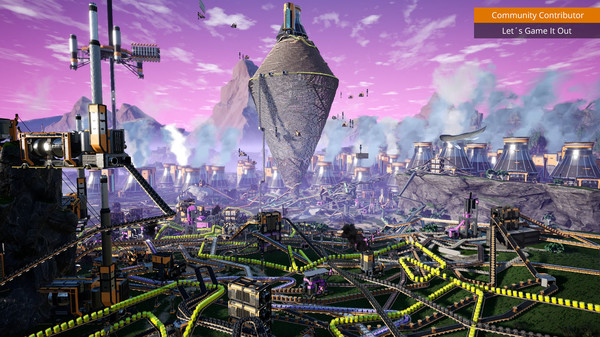
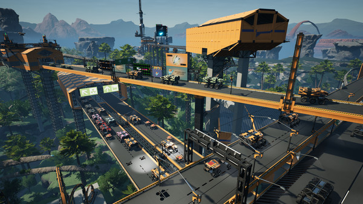
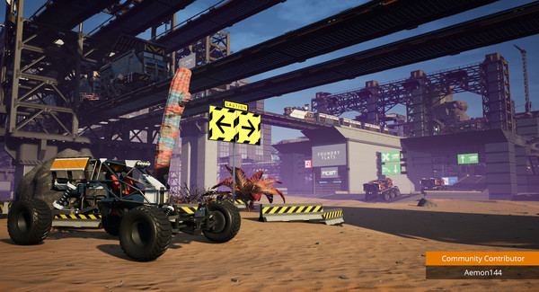
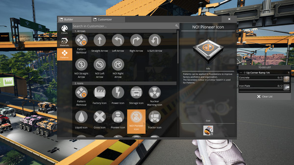
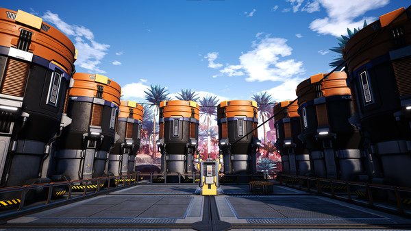
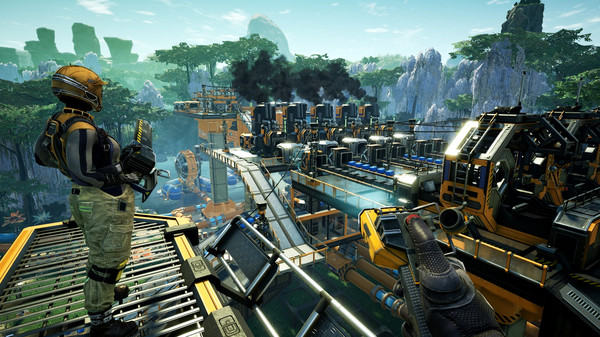
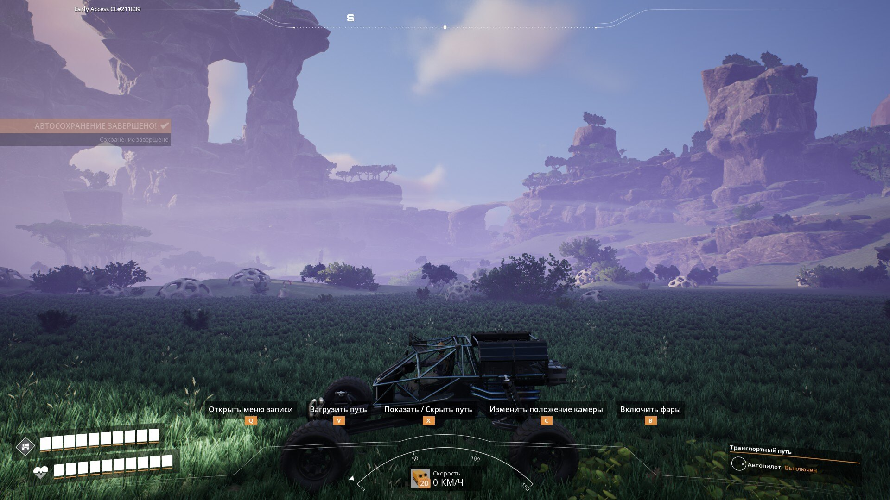
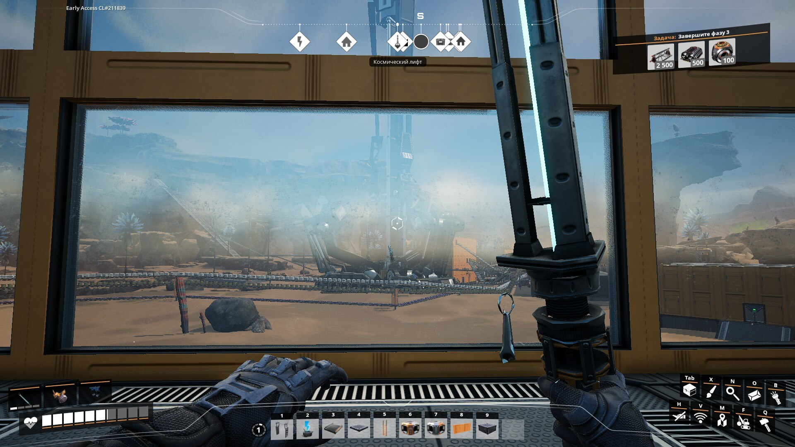

Сздесь я раскажу и покажу сатисфэктори скожу своё мнение о ней
ладно небуду зодерживать назад

Satisfactory — это игра от первого лица в открытом мире, вы которой вам нужно строить заводы, с упором на
исследования и бои. Играйте в одиночестве или с друзьями, исследуйте незнакомую планету, возводите многоэтажные заводы
и вступите в конвейерный рай!
Строительство
Покажите природе, кто тут настоящий хозяин: повсюду стройте огромные заводы. Расширяйтесь, куда и как хотите. Планета
битком набита ценными природными ресурсами, которые только и ждут, когда же их добудут. И ваш долг как сотрудника
корпорации FICSIT в том, чтобы пустить их на полезное дело.
Автоматизация
Стройте великолепные, совершенные заводы или протягивайте сложные конвейерные сети, чтобы обеспечить все свои
потребности. Автоматизируйте свои грузовики, чтобы добраться до самых дальних объектов! Постройте трубопровод, чтобы
безопасности транспортировать жидкости. Все ради минимизации объема ручного труда!
Исследование и разработка
Отправляйтесь на экспедиции на поиски новых материалов — полезное применение можно найти чему угодно. Не надо ждать милости у
природы! Ваша задача — забрать их! В вашем распоряжении для облегчения исследований есть транспорт, реактивные ранцы,
прыжковые трамплины и многое другое. Не забудьте про специальное снаряжение для обеспечения безопасности — вдруг вам
повстречается представитель местной фауны и выражение «борьба с природой» обретет буквальный смысл!
ОСОБЕННОСТИ
• Открытый мир: Исследуйте огромную (30 кв. км) чужую планету Massage 2(AB)b с ее уникальной фауной.
• Режим совместной игры: Постройте завод самостоятельно или разделите это удовольствие с друзьями.
• Возведение завода: Узнайте, каково это — построить огромный завод от первого лица. Автоматизируйте и оптимизируйте его,
чтобы добиться абсолютного совершенства.
• Персонализация: Ваш завод будет именно таким, как нравится вам. Вы можете построить его в горах или на равнине, следовать
особенностям ландшафта или превратить их в ровную площадку ради Эффективности — нет никаких преград, и только вам решать,
каким будет ваш завод.
• Транспорт: Путешествуйте по миру с комфортом. В вашем распоряжении прыжковые трамплины, заводские тачки, реактивные ранцы,
гипертрубы, грузовики и поезда

СИСТЕМНЫЕ ТРЕБОВАНИЯ
МИНИМАЛЬНЫЕ:
64-разрядные процессор и операционная система
ОС: Windows 10 or later (64-Bit)
Процессор: i5-3570 3.4 GHz 4 Core
Оперативная память: 8 GB ОЗУ
Видеокарта: Nvidia GTX 1650/GTX 1050-ti, or AMD RX 470/RX 570, or equivalent performance & VRAM
Место на диске: 15 GB
Дополнительно: Internet connection required for multiplayer. The game is in early access and minimum requirements may change.
РЕКОМЕНДОВАННЫЕ:
64-разрядные процессор и операционная система
ОС: TBD
Процессор: TBD
Видеокарта: TBD
Место на диске: TBD MB
моё мнение satisfactory есть у меня в стиме и я наиграл больше 200 часов и игра и в правду стоит своих денег
это шедевор когда я пишу эту старницу (20.11.2023) недавно пару дне назад вышел 8 обдэйт
и какже без скринов (взяты с офицальной страници стим)





мои скрины с satisfactory советую одалить сайт

